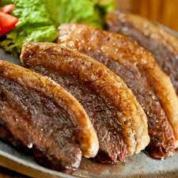

Picanha
Ingredientes
- 2kg Picanha
- Sal Grosso
Modo de preparo
- Corta a carne com a grossura de um ou dois dedos.
- Passar um salzinho dos dois lado a gosto.
- Em uma churrasqueira com temperatura de 5 segundos de calor colocar cada lado para assar por 5 min. Tirar ao ponto do boi ainda mujindo para ficar top